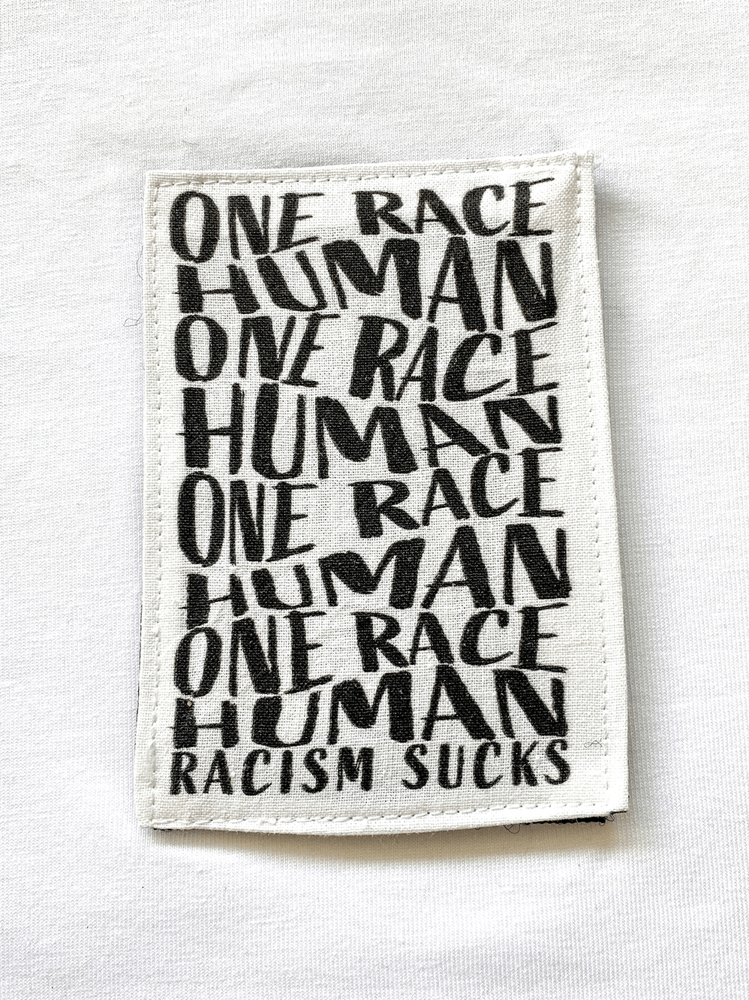
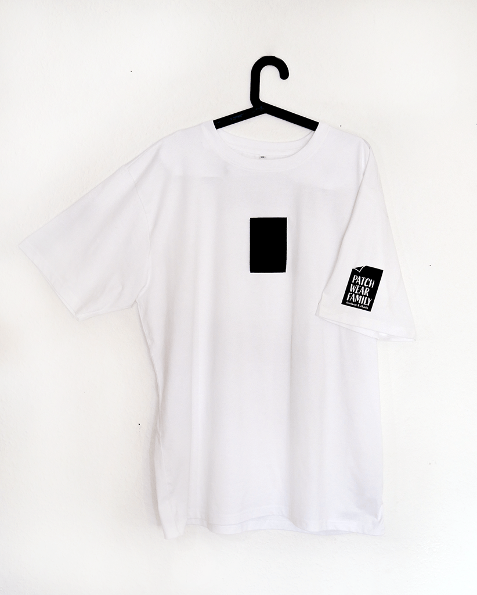
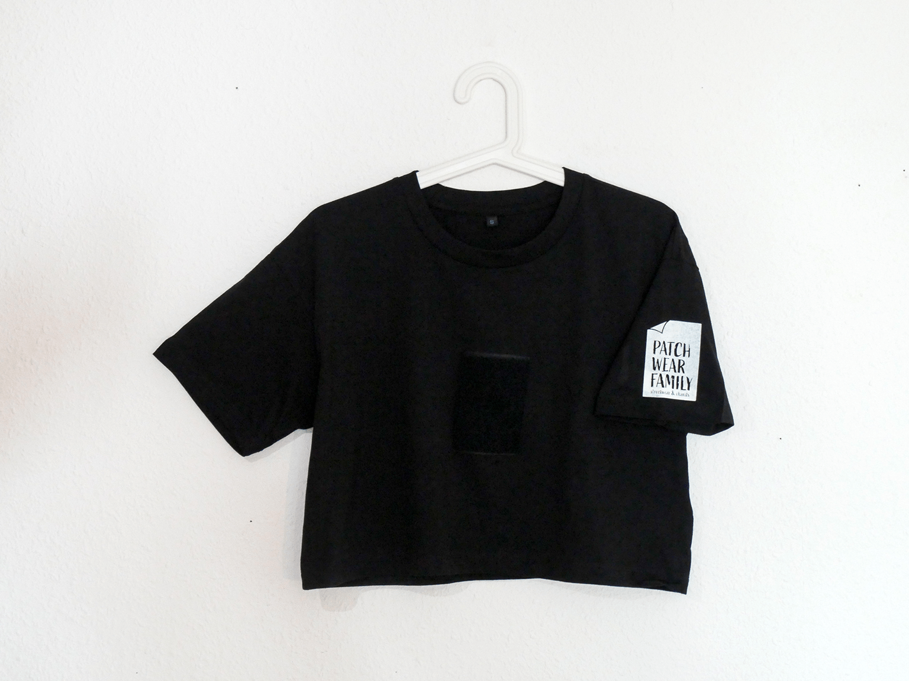

„Human“
Dazu gibt es nichts anzumerken! Wir gehören alle zur selben Rasse, Mensch! Rassismus ist Ignoranz und völlig unangebracht!
Bio-Shirts
Nachhaltige, streng zertifizierte Bio-Baumwollshirts aus kontrollierter fairer Herstellung. Jedes Shirt kommt mit aufgenähtem Gegenstück für die Patches und einem Logo Backprint im Nacken.

„OVERSIZED T“
Schlichter oversized Schnitt mit Rundhals. Moderne Oversized Silhouette die vielseitig kombinierbar ist.

„Cropped T“
Lässig kurzes Oberteil im modisch kastenförmigen Schnitt. Mehr als nur Basic!